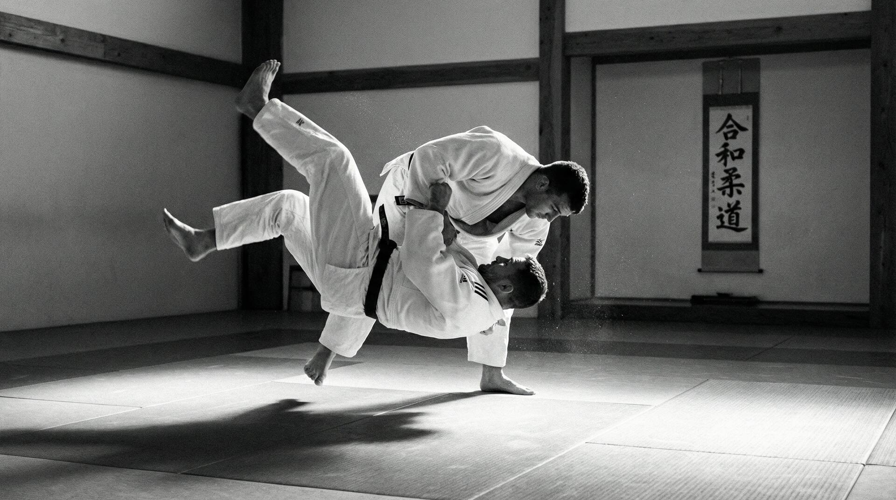
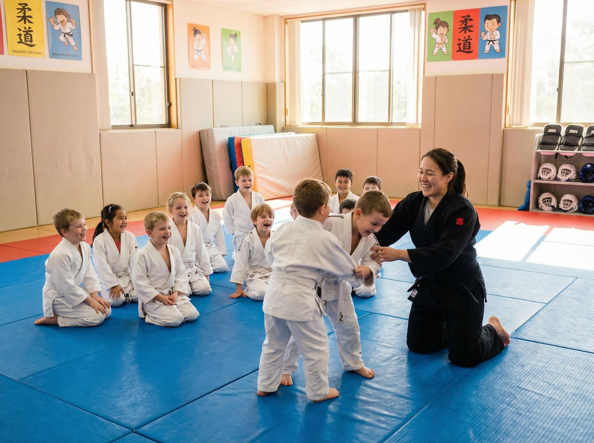
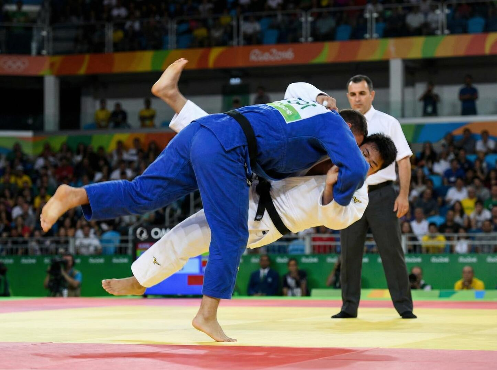
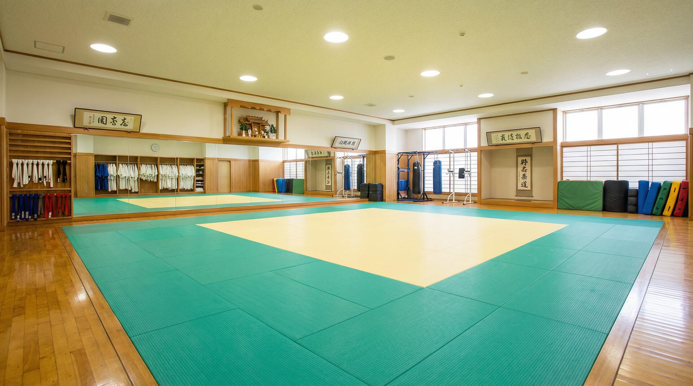

Disciplina, Respeito e Superação
Bem-vindo à Judô Kaminari, onde ensinamos mais que técnicas. Aqui você desenvolve disciplina, respeito e superação pessoal através das artes marciais tradicionais.

Ensinamos a importância da disciplina através do treinamento consistente e dedicado. Cada movimento, cada técnica é aprendida com foco e comprometimento.
O respeito ao próximo, aos mestres e a si mesmo é fundamental no judô. Cultivamos uma comunidade onde todos são valorizados e apoiados.
O judô desenvolve força, flexibilidade, equilíbrio e coordenação. Além disso, fortalece a mente, aumenta a confiança e melhora a saúde mental.
Preparamos nossos alunos para competições, desenvolvendo técnicas avançadas e estratégias de combate para aqueles que desejam competir.

Para crianças de 4 a 11 anos. Desenvolvemos coordenação, disciplina e confiança através de técnicas básicas e jogos lúdicos.
Para adolescentes de 12 a 17 anos. Aprofundamos técnicas e iniciamos preparação para competições.
Para maiores de 18 anos. Treino completo com técnicas avançadas, condicionamento físico e preparação competitiva.

Programa especializado para atletas que desejam competir em torneios e campeonatos regionais e nacionais.
O judô (柔道) é uma arte marcial japonesa moderna que significa "o caminho da flexibilidade" ou "o caminho da gentileza". Criado em 1882 pelo mestre Jigoro Kano, o judô combina técnicas de combate com princípios filosóficos profundos, transformando-se em um esporte olímpico reconhecido mundialmente.
Diferentemente de muitas artes marciais que enfatizam golpes de punho e chute, o judô concentra-se em técnicas de arremesso, imobilização e estrangulamento controlado, utilizando a força e o equilíbrio do oponente contra ele mesmo.
"Bem-estar mútuo e benefício comum". O princípio de que todos se ajudam para crescer juntos.
"Uso eficiente da energia". Aprender a usar a força mínima necessária para executar uma técnica.
O respeito é central no judô. Respeita-se o mestre, os companheiros, os adversários e a si mesmo.
As técnicas de arremesso são o coração do judô. O judoka aprende a usar a força, o equilíbrio e a mecânica corporal para derrotar o oponente.
Técnicas executadas quando o judoka está no solo, incluindo imobilizações e estrangulamentos controlados.
Força, flexibilidade, resistência, coordenação e equilíbrio.
Concentração, estratégia, confiança e autocontrole.
Respeito, trabalho em equipe, amizade e comunidade.
Persistência, humildade, responsabilidade e integridade.
O judô foi criado em 1882 pelo professor Jigoro Kano, que combinou técnicas de várias escolas de jujutsu com princípios filosóficos. Kano acreditava que o judô deveria ser mais que um esporte - deveria ser um caminho de vida que desenvolvesse o caráter e contribuísse para a sociedade.
Em 1964, o judô foi incluído nos Jogos Olímpicos de Tóquio, consolidando sua posição como um dos esportes mais importantes do mundo. Hoje, o judô é praticado em mais de 200 países por milhões de pessoas de todas as idades.

Local de treinamento
Mestres experientes
Treinos e técnicas
Eventos e torneios
Siga-nos no Instagram para mais fotos, vídeos e novidades!
📷 @judokaminari
Rua Gabriel Arns, 26
Curitiba – PR, Brasil
CEP: 81570-300
Redes Sociais